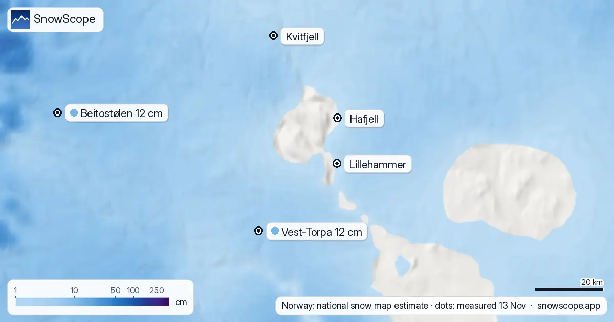

Snörapport Hafjell: ett tunt pudrat lager på toppen, grönt i Øyer (14 november 2026)
Hafjell, strax norr om Lillehammer, är fortfarande mer höst än vinter. Norges nationella snökarta uppskattar ungefär 2 cm snö på 1 045 m, nära liftarnas topp, och 0 cm på 141 m nere vid älven i Øyer. Ingen allmän väderstation i backen mäter snödjupet, så det här är en uppskattning. Som jämförelse ger vår historik från 46 vintrar 25 cm som normalt snödjup på toppen den 14 november.
Se snöprognosen för Hafjell live i SnowScope-appenSnödjup, pudervarningar och 3D-kartan, gratis.
En långsam start
Förra veckan gav bara några centimeter: vi uppskattar ungefär 4 cm på toppen och ungefär 1 cm i dalen, och en del av det har redan försvunnit. Backens nedre halva är bar gräsmark och skogsmark.
Närmaste station som mäter snö, Vest-Torpa på 542 m och 41 km bort, hade 12 cm den 13 november, så andra backar i regionen klarade sig bättre. Det är en start under det normala för Hafjell, men inte en konstig sådan. En vinter av fyra har dalen ingen snö alls den 14 november, och på toppen har en vinter av tio bara 2 cm det datumet.

De kommande sju dagarna
Vår prognos ger ungefär 9 cm på toppen (1 058 m), 8 cm på 625 m och inget i dalen (192 m). De andra prognoserna som vi kollar innan vi publicerar ligger mellan 12 och 28 cm på toppen.
Den svaga punkten är återigen nedre delen. Där kommer ungefär 60 % av nederbörden i de prognoserna som regn, och snögränsen ligger runt 310 till 420 m. Den övre halvan kan alltså bli vit i veckan, de nedre backarna och byn troligen inte.
När Hafjell brukar fyllas på
En normal vinter har toppen 46 cm den 30 november och 58 cm den 15 december, dalen 27 cm och 39 cm. Dalen får oftast sin första bestående snö runt den 30 oktober, toppen runt den 12 oktober.
Sedan växer snötäcket hela vintern. I slutet av mars ligger det normalt ungefär 106 cm på toppen, och den vita säsongen där uppe varar i ungefär 217 dagar. Det kartlagda området har 39 km nedfarter och 17 liftar, så det finns gott om plats att sprida ut sig när det väl har fyllts på.
Har Hafjell öppnat?
Inte än. Enligt Hafjells sida med öppettider är den 27 november 2026 planerad som första dag, och säsongen pågår till den 11 april 2027.
Tips för skidåkare
- Vill du ha snö på marken nu är de högre fjällplatåerna bakom skidområdet ditt bästa kort, inte de nedre backarna.
- Regn nertill och snö på toppen samma vecka betyder isfläckar på tillfartsvägarna på morgonen.
- Öppningsplanerna hänger på kalla nätter för snötillverkning: följ anläggningens egen nyhetssida.
Fler kartor (externa webbplatser)
Referenser och källor
- seNorge, Norges nationella snökarta (NVE och MET Norway), öppna data under NLOD-licensen www.senorge.no/
- Hafjell, officiell sida: öppettider och liftstatus, läst 2026-11-13 www.alpinco.com/no/hafjell/apningstider-vinter
- Varsom, lavinvarningar för Norge www.varsom.no/
- MET Norway, stationsobservationer (CC BY 4.0), dagliga rapporter som de publiceras av Ogimet www.ogimet.com/
Om siffrorna
Uppmätt snö: morgonavläsningar den 13 november 2026 vid de officiella väderstationerna i Sverige (SMHI öppna data), Finland (FMI öppna data, CC BY 4.0) och Norge (MET Norways stationsrapporter, CC BY 4.0, publicerade av Ogimet). Norges nationella snökarta seNorge (NVE och MET Norway, NLOD) ger uppskattningarna på ett rutnät om 1 km för backarna. Våra siffror: SnowScopes prognos för de kommande sju dagarna på tre höjder i skidområdet, jämförd med oberoende prognoser (ECMWF, ICON, GFS, GEM) för 14 till 20 november; snöhistorik för 46 tidigare vintrar (1980-81 till 2025-26), en modell av det förflutna korrigerad för höjd. Öppningsdatum: anläggningarnas egna sidor, lästa den 13 november 2026. Pistlängd och antal liftar: kartläggning i OpenSkiMap.
Officiella lavinprognoser: Varsom (NVE)
Citera den här rapporten
För forskning, undervisning eller press: siffrorna och diagrammen får återanvändas fritt under CC BY 4.0 med den här källhänvisningen.
SnowScope (2026), Snörapport Hafjell: ett tunt pudrat lager på toppen, grönt i Øyer (14 november 2026), https://snowscope.app/blog/sv/2026/11/hafjell-snow-report-14-november-2026.html, hämtad 2026-11-14
SnowScope (Atlas Labs). (2026, November 14). Snörapport Hafjell: ett tunt pudrat lager på toppen, grönt i Øyer (14 november 2026). SnowScope snow reports. https://snowscope.app/blog/sv/2026/11/hafjell-snow-report-14-november-2026.html
BibTeX
@misc{snowscope2026hafjellsnowreport14novem,
author = {{SnowScope (Atlas Labs)}},
title = {Snörapport Hafjell: ett tunt pudrat lager på toppen, grönt i Øyer (14 november 2026)},
year = {2026},
month = nov,
howpublished = {\url{https://snowscope.app/blog/sv/2026/11/hafjell-snow-report-14-november-2026.html}},
note = {Published 2026-11-14 16:19 UTC; accessed 2026-11-14}
}· CC BY 4.0 · Metoder, data och verktyg →
Hafjell: snö och temperatur efter höjd, i vinter jämfört med förra (verktyg) →
Följ Hafjell
Gratis: ett meddelande när nysnö är på väg, och prognosen varje morgon.
Fler snörapporter

Hundägare i Oslo, 13 november 2026: 4 cm snö på Blindern, 31 cm vid Bjørnholt och 37 cm på Tryvannshøgda. Var hunden får springa lös, vad koppelreglerna säger i november och en kall, torr lördag.

Uppmätt snö på marken den 13 november 2026 i Oslo, Bergen, Trondheim, Tromsø, Stockholm, Göteborg, Östersund, Umeå, Luleå, Kiruna, Helsingfors, Tammerfors, Uleåborg och Rovaniemi: från 20 cm i Umeå till barmark i Kiruna.